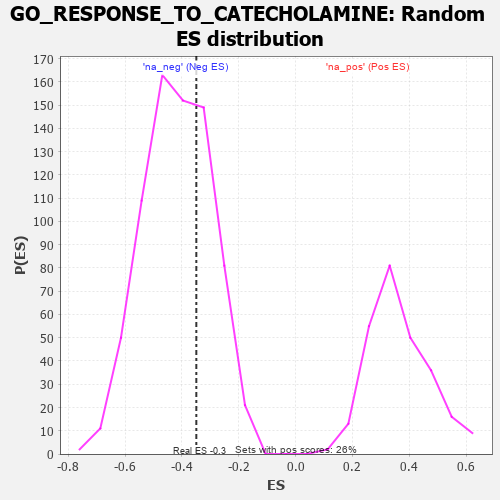

| | | Dataset | 7d |
| Phenotype | NoPhenotypeAvailable |
| Upregulated in class | na_neg |
| GeneSet | GO_RESPONSE_TO_CATECHOLAMINE |
| Enrichment Score (ES) | -0.3493568 |
| Normalized Enrichment Score (NES) | -0.8374407 |
| Nominal p-value | 0.6910569 |
| FDR q-value | 0.98102444 |
| FWER p-Value | 1.0 |
Table: GSEA Results Summary
 Fig 1: Enrichment plot: GO_RESPONSE_TO_CATECHOLAMINE
Fig 1: Enrichment plot: GO_RESPONSE_TO_CATECHOLAMINE
Profile of the Running ES Score & Positions of GeneSet Members on the Rank Ordered List
| PROBE | GENE SYMBOL | GENE_TITLE | RANK IN GENE LIST | RANK METRIC SCORE | RUNNING ES | CORE ENRICHMENT | | 1 | GSK3A | | | 351 | 0.745 | 0.0808 | No |
| 2 | ID1 | | | 719 | 0.555 | 0.1278 | No |
| 3 | RNLS | | | 2358 | 0.252 | -0.0358 | No |
| 4 | SIN3A | | | 2361 | 0.251 | 0.0061 | No |
| 5 | RGS8 | | | 3490 | 0.079 | -0.1225 | No |
| 6 | MAPK3 | | | 3589 | 0.062 | -0.1244 | No |
| 7 | HTR1B | | | 3745 | 0.035 | -0.1380 | No |
| 8 | VPS35 | | | 3989 | -0.006 | -0.1675 | No |
| 9 | PDE4B | | | 4089 | -0.022 | -0.1763 | No |
| 10 | ABL1 | | | 4125 | -0.027 | -0.1762 | No |
| 11 | LRRK2 | | | 4467 | -0.087 | -0.2044 | No |
| 12 | DRD2 | | | 5088 | -0.221 | -0.2452 | No |
| 13 | KCNQ1 | | | 5918 | -0.441 | -0.2754 | Yes |
| 14 | GABPA | | | 5977 | -0.464 | -0.2048 | Yes |
| 15 | GSK3B | | | 6719 | -0.768 | -0.1690 | Yes |
| 16 | PDE4D | | | 7764 | -1.944 | 0.0260 | Yes |
Table: GSEA details [plain text format]

Fig 2: GO_RESPONSE_TO_CATECHOLAMINE: Random ES distribution
Gene set null distribution of ES for GO_RESPONSE_TO_CATECHOLAMINE